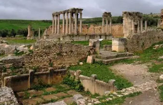
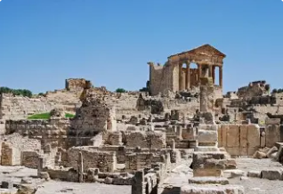
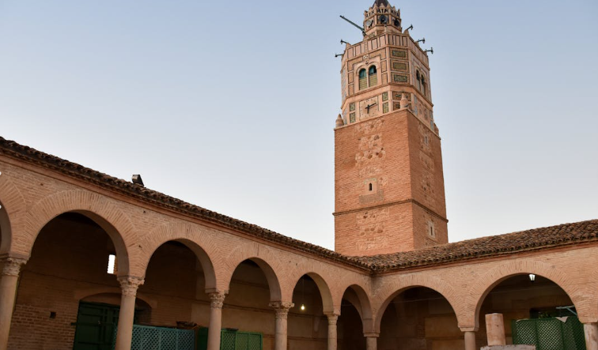

Le Grenier de la Tunisie

Béja est un gouvernorat situé dans le nord-ouest de la Tunisie, dans la région du Tell. C'est une région agricole par excellence, célèbre pour ses vastes champs de céréales et ses paysages verdoyants.
La ville de Béja, chef-lieu du gouvernorat, est une ancienne cité romaine appelée autrefois "Vaga". Elle est perchée sur une colline et offre une vue panoramique sur les plaines environnantes.
Le gouvernorat se distingue par son riche patrimoine historique remontant à l'époque numide, romaine et islamique, ainsi que par sa nature luxuriante et ses traditions agricoles ancestrales.
Béja est le grenier de la Tunisie, produisant une grande partie des céréales du pays, notamment le blé dur de haute qualité.
Riche patrimoine romain avec des sites archéologiques majeurs, témoignant de l'importance de Vaga dans l'Afrique romaine.
Paysages verdoyants avec des forêts de chênes-lièges, des collines ondulantes et une nature préservée propice à l'écotourisme.
Le Festival National de Testour, célèbre événement culturel andalou-tunisien qui attire des visiteurs de toute la Méditerranée.

Site archéologique romain classé UNESCO, considéré comme la plus belle petite ville romaine d'Afrique du Nord. Son théâtre, son capitole et ses temples sont exceptionnellement bien préservés.

Mosquée andalouse unique du XVIIe siècle avec un minaret octogonal et une horloge inversée. Elle témoigne de l'héritage des Morisques andalous à Béja.